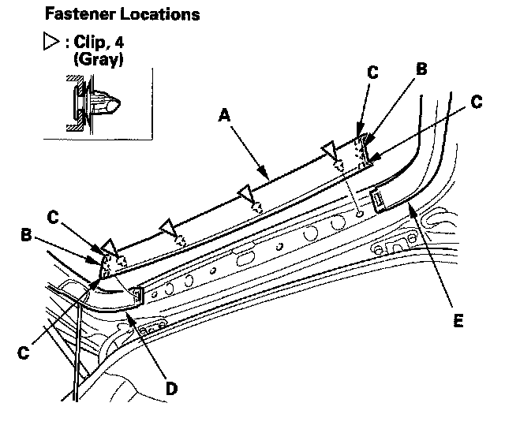

Trunk / Liftgate Interior Trim Panel: Service and Repair
Trim Removal/Installation - Tailgate AreaSpecial Tools Required
KTC trim tool set SOJATP2014 *
* Available through the American Honda Tool and Equipment Program
NOTE:
- Put on gloves to protect your hands.
- Take care not to bend or scratch the trim and panels.
- Use the appropriate tool from the KTC trim tool set to avoid damage when removing components.

1. Remove the tailgate upper trim panel (A).
1. Detach the hooks (B) and tabs (C) from the left tailgate side trim (D) and right tailgate side trim (E).
2. Pull the tailgate upper trim panel back by hand to detach the clips, then remove it.
2. Remove the left tailgate side trim (A) and the right tailgate side trim (B).
1. Pull out the top of the side trim to detach the clips.
2. Detach the tabs (C) and hooks (D) from the tailgate lower trim panel (E).
3. Remove the tailgate pull pocket (A).
1. Pry the hooks (B) with a trim tool.
2. Carefully pull the edge of the tailgate lower trim panel (C) just beside the tailgate pull pocket by hand, and push out the inside hooks (D).
3. Pull down the upper edge of the pocket and release the lower tabs (E).
4. With power tailgate: Disconnect the power tailgate close switch connector (F).

4. Remove the tailgate lower trim panel (A).
1. Detach the clips (B) beside the tailgate latch.
2. Pull down the panel to detach all of the clips (C).
5. Install the trim and panel in the reverse order of removal, and note these items:
- Make sure the power tailgate close switch connector is plugged in properly.
- If the clips are damaged or stress-whitened, replace them with new ones.
- Push the clips into place securely.